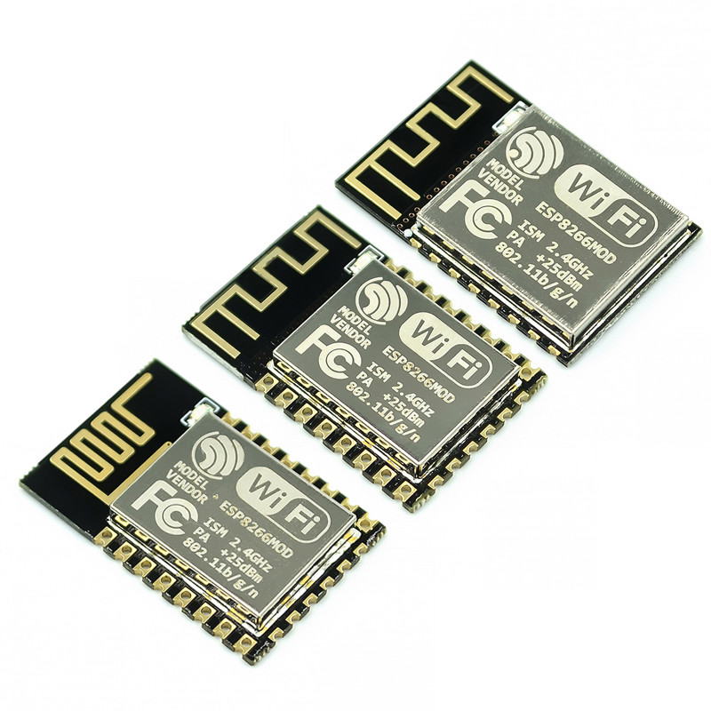

ESP8266-это высокоинтегрированный чип, разработанный для нужд нового подключенного мира. Он предлагает полное и автономное сетевое решение Wi-Fi, позволяющее либо размещать приложение, либо выгружать все сетевые функции Wi-Fi с другого процессора приложений.
ESP8266 имеет мощные встроенные возможности обработки и хранения, которые позволяют интегрировать его с датчиками и другими устройствами для конкретных приложений через GPIOs с минимальной разработкой и минимальной нагрузкой во время выполнения. Высокая степень встроенной интеграции обеспечивает минимальную внешнюю схему, а все решение, включая интерфейсный модуль, рассчитано на минимальную площадь печатной платы.
ESP8266-это высокоинтегрированный чип, разработанный для нужд нового подключенного мира. Он предлагает полное и автономное сетевое решение Wi-Fi, позволяющее либо размещать приложение, либо выгружать все сетевые функции Wi-Fi с другого процессора приложений.
ESP8266 имеет мощные встроенные возможности обработки и хранения, которые позволяют интегрировать его с датчиками и другими устройствами для конкретных приложений через GPIOs с минимальной разработкой и минимальной нагрузкой во время выполнения. Высокая степень встроенной интеграции обеспечивает минимальную внешнюю схему, а все решение, включая интерфейсный модуль, рассчитано на минимальную площадь печатной платы.
Эс01
SDIO 2,0, SPI,UART
32-контактный QFN посылка
Встроенный радиочастотный переключатель, балун, 24 дБм Па, DCXO и PMU
Интегрированный процессор RISC, встроенная память и интерфейсы внешней памяти
Интегрированные процессоры/процессоры основной полосы частот
Управление качеством услуг
Интерфейс I2S для высококачественных аудио приложений
Встроенные линейные регуляторы с низким падением напряжения для всех внутренних источников питания
Запатентованная архитектура генерации тактовых импульсов без ложных данных
Интегрированные двигатели WEP,TKIP,AES и WAPI
Решения
Поддержка APSD для оптимальных VoIP приложений
Запатентованный алгоритм подавления паразитного шума для интеграции в приложения SOC
Поддерживает интерфейс сосуществования Bluetooth
Само-откалиброванный РФ для обеспечения оптимальной работы под всеми эксплуатационными условиями
Нулевая заводская настройка
Нет внешних радиочастотных компонентов
Характеристики
802,11 б/г/н
Wi-Fi Direct (P2P),soft-AP
Интегрированный стек протоколов TCP/IP
Интегрированный переключатель TR, балун, LNA, усилитель мощности и соответствующая сеть
Интегрированные PLLs, регуляторы, DCXO и блоки управления питанием
Выходная мощность + 19,5 дБм в режиме 802.11b
Ток утечки при отключении питания <10uA
Встроенный 32-битный процессор с низким энергопотреблением может использоваться в качестве процессора приложений
SDIO 1,1/2,0, SPI,UART
STBC,1 × 1 мимо, 2 × 1 мимо
A-MPDU и A-MSDU агрегация и 0,4 мс Защитный интервал
Пробуждение и передача пакетов за <2 мс
Энергопотребление в режиме ожидания <1,0 мВт (DTIM3)
1. Высокое качество и низкая цена
2. Соглашение LWIP
3. Поддержка 3 режимов: AP,STA,AP + STA
4. Идеально и просто в командах
Теперь для Arduino можно подключиться к Wi-Fi, не тормозя банк.
Используйте этот модуль для вашего следующего проекта Interet вещей, домашней автоматизации или проекта удаленного датчика.
Этот модуль поддерживает микросхему ESP8226 для использования через последовательное соединение с помощью простых команд.
Не требуется SPI-интерфейс или ноу-хау.
Предупреждения:
Этот модуль требует питания 3,3 Вольт для VCC и 3,3 логики V. Это не 5В толант. Подключите RX или TX на 5V для Arduino будет
Уничтожить этот модуль. Вы должны использовать преобразователь логического уровня или 3,3 V для Arduino
Источник питания 3,3 V на Arduino Uno имеет недостаточный ток для питания этого модуля. Вы должны предоставить отдельный,
Более высокий запас 3,3 V (около 300 мА или лучше)
ESP-12F
ESP8266-12F-это улучшенная версия ESP8266-12, идеальная периферийная схема, технология четырехслойной платы, улучшенное согласование импеданса, лучший выходной сигнал, будь то стабильность или защита от помех, антенна PCB благодаря профессиональным лабораторным испытаниям, сертификации ROHS, была значительно улучшена! Для тех, кто выбирает ESP-12 раньше, даже если продукт был сделан, это не имеет значения, расширенная версия полностью совместима с прошивкой до вывода в ESP-12 на основе добавления шести портов IO, портов SPI, разработка более удобная, более обширная!
Сертификация стандартов: FCC / CE / TELEC
Стандарты беспроводной связи: 802,11 b / g / n
Частотный диапазон: 2,4 ГГц-2,5 ГГц (2400 м-2483,5 м)
Интерфейс данных: UART / HSPI / I2C / I2S / Ir удаленный Contorl GPIO / PWM
Рабочее напряжение: 3,0 ~ 3,6 V (рекомендация 3,3 V)
Рабочий ток: Средний: 80 мА
Рабочая температура: -40 ° ~ 125 °
Температура хранения: нормальная температура
ESP-12E
Модель: ESP8266-12
ISM 2,4 ГГц
Па + 25 дБм
802.11b/G/N
Предупреждения:
1. Этот модуль требует питания 3,3 Вольт для VCC и 3,3 логики V.
2. Это не 5V tolant, подключите RX или TX на 5V Для Arduino разрушит этот модуль.
3. Вы должны использовать преобразователь логического уровня или 3,3 V для Arduino
4. Источник питания 3,3 V на Arduino Uno имеет недостаточный ток для питания этого
Модуль.
5. Вы должны предоставить отдельный, более высокий источник питания (около 300 мА или лучше) 